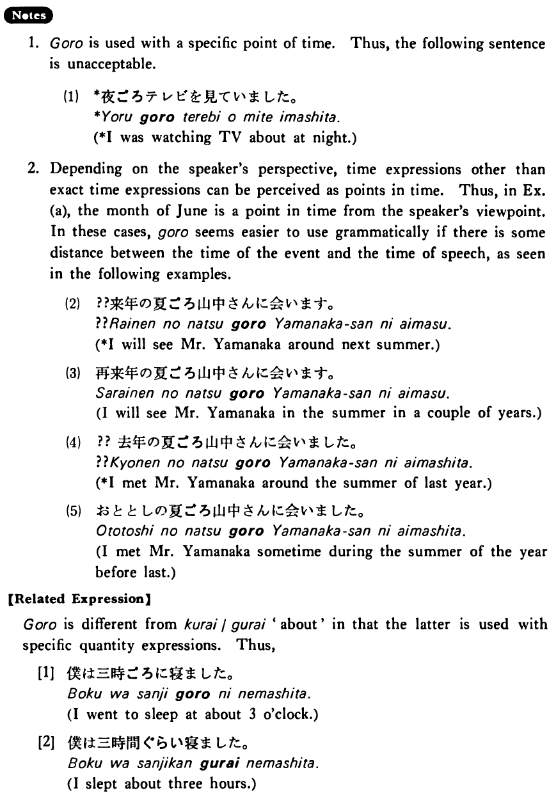

ごろ (B. 126)
- (ks).
- 鈴木さんは朝七時ごろうちを出る・出ます。
- Mr. Suzuki leaves home at about 7:00 o'clock in the morning.
- (a).
- A:いつごろ北京に行きますか。 B:来年の六月ごろ行きます。
- A: About when are you going to Beijing? B: I'm going there around June of next year.
- (b).
- A:今朝は何時ごろまで寝ていましたか。 B:十時ごろまで寝ていました。
- A: Until about what time were you asleep this morning? B: I was asleep until about 10 o'clock.
- (c).
- 去年の今ごろは大雪でしたね。
- About this time last year it snowed heavily, didn't it?
